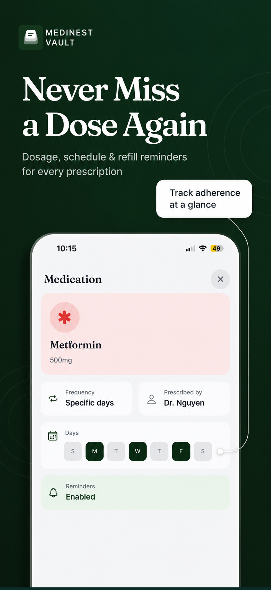

Prescriptions & Medications
Best Prescription Tracker App for Families
The best prescription tracker for a family isn't the one built for a single patient — it's one that keeps every person's medications, dosages, and refill dates separate, searchable, and reminders on. MediNest is a prescription tracker built specifically for households, not individuals.

Why families search for a prescription tracker
Most medication apps are built around one person's pillbox. But real households don't work that way — a parent might be tracking their own blood pressure medication, a child's antibiotics course, and an aging parent's five daily prescriptions, all at once. Sticky notes and paper folders fall apart fast, and single-user medication apps force you to either juggle multiple accounts or cram everyone's meds into one confusing list.
How MediNest works as a family prescription tracker
- •Per-person medication lists. Every family member has their own set of prescriptions, dosages, and frequency schedules — no mixing up whose pill is whose.
- •Dose and refill reminders. MediNest reminds you when a dose is due and when a prescription is running low, before it runs out.
- •The original prescription, attached. Snap a photo of the prescription itself so the dosage, prescribing doctor, and instructions are always one tap away.
- •Adherence at a glance. See which days a medication was taken on schedule for a specific family member, right from their profile.
How to set up prescription tracking in MediNest
- Add each family member to your MediNest vault, or select an existing profile.
- Snap a photo of the prescription — MediNest files it under that person's Medications tab automatically.
- Set the dosage, frequency, and which days it's taken.
- Turn on reminders so you're nudged for every dose and every refill.
Frequently asked questions
What is the best prescription tracker for a family, not just one person?
The best family prescription tracker separates medications by person, sends dosage and refill reminders per family member, and stores a photo of the original prescription. MediNest does all three in one shared vault.
Can a prescription tracker remind me about refills, not just doses?
Yes. MediNest's medication tracker sends refill reminders alongside dose reminders, so you restock before a prescription runs out, not after.
Track every family member's prescriptions in one app
Free to start. No credit card required.
Get Notified at Launch